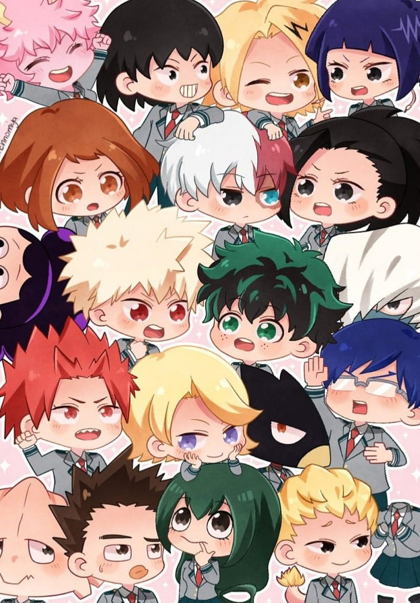

Je parle d'anime et de manga
Pour Ce qui aime les dark fantasy je vous conseil l'anime Black butler,ou de son nom original:KUROSHITSUJI
-
Black Butler est un anime de type dark fantasy et mystère, qui se déroule dans l’Angleterre victorienne.
- Black Butler est un anime se déroulant dans l’Angleterre victorienne. Il suit Ciel Phantomhive, un jeune comte qui conclut un pacte avec un démon nommé Sebastian Michaelis pour venger la mort de ses parents. En échange de son âme, Sebastian devient son majordome et le protège tout en l’aidant à résoudre des affaires sombres pour la Reine.
Pour ceux qui préfère les shonen d'action,d'avanture et de fantasy je vous conseil l'anime "Fairy Tail". Il s'aggit d'un anime japonais basé sur le manga de Hiro Mashima. Fairy tail et très populaire pour son univers magique et ses personnages attachants.

- "Fairy Tail" suit les aventures de Lucy Heartfilia, une jeune constellationniste (mage qui invoque des esprits) qui rejoint la guilde de mages Fairy Tail, réputée autant pour sa puissance que pour ses dégâts collatéraux.
- elle y rencontre Natsu Dragnir, un mage du feu élevé par un dragon, a la recherche de son père adoptif disparu, le roi des dragon de feu Igneel.Il est souvent accompagné de Happy, un chat bleu volant.elle y rencontre également ses compagnons de guilde. Ensemble, ils forment une équipe et vivent de nombreuses missions et batailles épiques.Ensemble, ils accomplissent des missions, affrontent des ennemis puissants et défendent leurs amis avec courage. L’histoire met en avant l’amitié,la magie,et le dépassement de soi dans un monde rempli de mystères et de combats épiques.
Pour ceux qui prefère les Shonen d'Action,de Super-héros et de drame,l'anime My Hero academia ou de son nom original:BOKU NO HERO ACADEMIA et fait pour vous

- Dans un monde où 80 % de la population possède un "Alter" (un super-pouvoir), être un héros professionnel est devenu un véritable métier. Ces héros protègent les civils et luttent contre les criminels dotés d’Alter : les Vilains.
- Le jeune Izuku Midoriya, surnommé Deku, est né sans Alter, mais rêve de devenir le plus grand des héros, comme son idole All Might, le héros numéro un. Un jour, Deku fait preuve d’un grand courage face à un vilain, et All Might décide alors de lui transmettre son propre Alter, le One For All, un pouvoir unique capable de se transmettre.Grâce à cela, Deku est accepté dans la prestigieuse école de héros : UA High School, où il rejoint la Classe 1-A, aux côtés d'autres jeunes apprentis héros aux Alters variés.A noté aussi que Au fil des saisons, la tension monte entre les héros et les vilains, menant à une guerre totale. Deku et ses amis doivent faire face à des choix difficiles et grandir pour devenir de véritables héros dans un monde de plus en plus instable.
Pour les fan d'animes sur le Surnaturel,la Comédie, le Mystère,l'École et le Drame.L'anime 'Toilet bound hanako kun' et fait pour vous!
- L'histoire se déroule dans un lycée où circulent de nombreuses rumeurs sur les "7 mystères" de l'école. L’un des plus célèbres est celui de Hanako-san, un esprit censé hanter les toilettes des filles et exaucer un vœu à ceux qui l’invoquent.
- Un jour, une élève nommée Yashiro Nene, en quête d’amour, décide d’invoquer Hanako-san… mais découvre avec surprise que le fantôme est en réalité un garçon ! Ce Hanako est espiègle, mystérieux et puissant. Après un enchaînement d’événements, Nene devient son assistante et se retrouve mêlée au monde surnaturel qui coexiste avec leur école.Ensemble, Hanako et Nene enquêtent sur les mystères paranormaux, affrontent des esprits perturbés, et lèvent peu à peu le voile sur le passé tragique de Hanako et les sombres secrets de l’école.